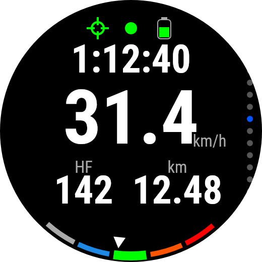
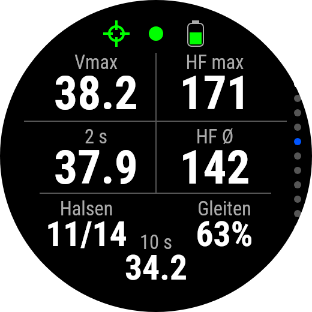

User guide for wing foiling sessions on your Garmin watch
Guide revision V2 · Updated: 27 November 2026
Help develop SurfsApp
Would you like to support development or request a particular feature? Sanitized FIT files from real sessions help improve sport specific functions and develop new features, such as detecting specific manoeuvres. Remove personal information first using the FIT Privacy Cleaner. The option to send me the sanitized FIT file directly will be added to the FIT Privacy Cleaner.
1 Prepare and start a session
Open SurfsApp on your watch and select Wing foilingIf Wing foiling is not shown in the sport selection, enable it under Settings → Sports.
Open the Wing foiling settings and check the following sections before starting Mode, Defaults, PagesandIQ Fields. Wing foiling settings are stored separately from windsurfing and surfing.
Select Wing foiling on the home screen Wing foiling.
Press START. The preview opens. You can browse the available pages without recording anything yet.
Press START again to begin recording.
After the session, press START/STOP to open the action menu, select Saveand confirm withYes.
The recording includes the GPS track, speed, time, heart rate and the metrics available for wing foiling. The activity is saved to Garmin Connect.
2 Pages during recording
Use UP and DOWN to browse the pages. Which additional pages appear depends on the selected modes and whether relevant events have already been detected.

Main page Active time, speed, heart rate, distance and heart rate zones.

Maxima Maximum speed, heart rate and other personal bests.Downwinds Dedicated overview page for downwind metrics.Jumps List of detected jumps with height and airtime.Compass Heading during the session.
The downwind feature does not automatically detect downwind runs from GPS data. To mark a specific downwind section for later analysis, enable both Learning mode and Downwind During recording, press BACK at the start of the section and press BACK again at the end. Three short vibrations confirm that the recording has ended. The Downwind page may still show dashes because it does not display automatically counted downwind values. The web app does not currently provide a dedicated downwind chart view.
The Jump list appears as soon as at least one jump has been detected. You can also configure custom pages with the metrics available for wing foiling.
3 Jumps and detail levels
SurfsApp can detect jumps while wing foiling and save their count and key metrics in the session. A jump is an event with a detected flight phase. The displayed height is calculated from the watch's motion data and is not a direct altitude measurement.
Under Wing Foiling → Mode → Jump select the required detail level:
Setting
What is recorded
Best suited for
Off
No jump detection. GPS, speed, distance and heart rate continue to be recorded as normal.
When you do not need jump analysis.
Connect
Jumps are detected and counted. Metrics such as count, height and airtime are available for the session.
A clear jump summary without additional motion details.
Visu
As with Connect, but additional motion data is saved for more detailed analysis in the SurfsApp web app.
When you want to examine individual jumps in more detail.
Jump threshold sets the minimum height at which a jump is counted. The default is 0.3 m. A higher value filters out smaller hops.
Select Visu before starting the session if you want to review the additional details later. The watch needs more storage and may take longer to write the jump data when saving. Without Visu, missing motion details cannot later be reconstructed from the standard GPS track.
4 Wing foiling settings
On watches with five buttons, open Settings by holding UP. On the vívoactive 4, select Settings on the home screen. Then select Wing foiling.
Menu
Setting
Function
Mode
Learning mode
Records additional data about arm movement. When the relevant measurements are available, you can later view them over time in the web app under Wing Foiling Learning Mode . This option is not required for a standard wing foiling session.
Mode
Downwind
Enables the downwind feature. Together with Learning mode, you can mark a downwind section during recording by pressing BACK at the beginning and end. There is no automatic GPS based count.
Mode
Jump
Selects Off, Connect or Visu. This setting determines whether and how jumps are recorded.
Defaults
Resume speed
The speed at which recording resumes after an automatic pause. Default: 5.5 km/h.
Defaults
Planing threshold
The speed from which time is counted as planing. Default: 11 km/h.
Defaults
Jump threshold
Minimum height for jump detection. Only shown when Jump is enabled. Default: 0.3 m.
Defaults
Pause below
For automatic pause, the speed below which a pause can begin. Default: 5 km/h.
Defaults
Pause after
How long speed must remain below the threshold before recording pauses automatically. Default: 15 seconds.
Pages
Page 1 and Page 2
Enable custom display pages, choose a layout and select data fields.
IQ Fields
Connect IQ metrics
Select which additional metrics are saved in the Garmin activity.
Automatic or manual pause
Pause control applies to windsurfing and wing foiling. With Automatic recording pauses when speed remains below Pause below for longer than the configured time. As soon as Resume speed is reached again, recording resumes. With Manual you control pausing and resuming yourself via the action menu.
Surfing uses manual pause only. Wing foiling settings do not affect the Surfing sport mode.
Changes to speed thresholds, pause thresholds and additional recording modes may only take effect in the next session. If the watch displays “Applies to next session”, the current recording remains unchanged.
5 Custom pages and IQ fields
Custom pages
You can configure two custom pages for wing foiling. Each page offers a layout with one to six cells. In each cell, choose a metric such as speed, maximum speed, heart rate, distance, time or an available wing foiling metric.
Open Wing Foiling → Pages → Page 1 or Page 2. Turn Active on, choose a Layout and use Field assignment to set the content of each cell. These pages apply only to wing foiling.
IQ Fields
Custom pages and IQ fields serve different purposes. Custom pages display live values on the watch. IQ fields additionally save selected metrics in the Garmin activity so they are available in Garmin Connect. Depending on your selection, these may include speed, manoeuvres, riding states and jump metrics.
SurfsApp calculates many metrics independently from the recorded GPS and motion data. The IQ field selection therefore mainly determines which additional values Garmin Connect receives directly.
Garmin limits the number of additional IQ fields to 16 per activity. Jump Visu also uses storage slots for its measurements. If many additional fields are selected, not all of them may appear in Garmin Connect. The watch shows how many values are selected and how many slots are available. SurfsApp analysis is independent of this limit.
6 Analyse a session in the web app
Open the SurfsApp web app and select your wing foiling session from the session list. The web app complements the watch display with a larger overview, a map and more detailed charts.
Section
Content
Sessions
Sort recordings, filter by sport, mark favourites and add comments.
Map
View the GPS track and speed overlaid on the map. Markers help you find specific locations again.
Numbers
Time, distance, speed, heart rate, personal bests and wing foiling metrics.
Charts
Review speed and other available measurements over time.
Wing Foiling Learning Mode
For suitable recordings with Learning mode enabled, additional arm movement measurements are available as a time series.
Jump analysis
For a session recorded with Jump Visu, additional motion data for individual jumps can be examined.
On narrow screens, use the tabs at the bottom to switch between Sessions, Numbers and Charts. On a larger screen, these sections are available in the full desktop view. You can switch between the two layouts.
The level of detail depends on the recording. GPS track, speed, time and heart rate are available without Visu. More detailed jump analysis requires the additional data captured by Jump Visu. The web app cannot reconstruct this data later from a standard GPS track.
7 Tips and troubleshooting
The Downwind page only shows dashes
This can happen with standard recordings. The Downwind page is available as a display, but it does not automatically count downwind runs. You can hide it under Wing Foiling → Mode → Downwind if you do not need it.
No jump was detected
Check whether Jump is set to Connect or Visu. Also check Jump threshold. A higher minimum value filters out smaller jumps. After your next recording, check the list on the watch and the metrics in the web app.
Detailed data for a jump is missing
Check whether Jump was set to Visu before recording started. Connect provides the count and metrics, but not the complete motion data required for detailed analysis.
A setting does not change during recording
Some settings are tied to the start of a recording. If the watch displays “Applies to next session”, the new value will only be used the next time recording starts.